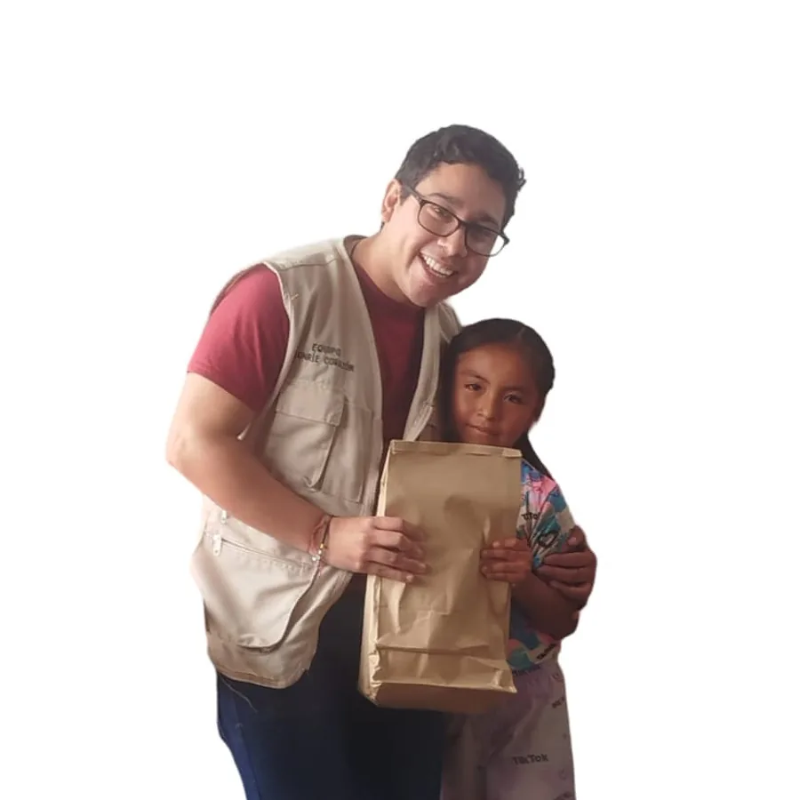

Campañas y donaciones
Movilización de materiales y recursos coordinados con la comunidad.
Acción solidaria
Nuestra trayectoria reúne campañas y acciones de acompañamiento que conectan voluntariado, aliados y comunidades.

Parte de nuestra historia
Movilización de materiales y recursos coordinados con la comunidad.
Actividades de integración y acompañamiento a niños y familias.
Espacios de encuentro y colaboración desarrollados en la trayectoria de la asociación.
Una participación responsable
Antes de organizar una entrega, definimos la necesidad, los recursos requeridos y la forma de participación. Así, cada aporte puede vincularse con una actividad concreta.
Consulta las iniciativas disponibles y cómo puedes colaborar como voluntario, donante o institución aliada.
Conversemos